更早的人说，发现黄金数的人就是那个发现
更早的人说，发现黄金数的人就是那个发现第五章 奇妙的黄金数
毕达哥拉斯有一句名言：凡是美的东西都有共同的特性，那就是部分与部分及部分与整体之间的协调一致。
你现在看的这本书，是个矩形。用尺子量一量它的长和宽，便会知道，它的长与宽的比差不多是1.4，是
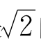
的近似值。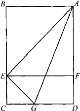
图5-1
不用尺子量，也可以验证这个事实。如图5-1，拿一张16开或32开的矩形白纸ABCD，把短边AB和长边AD对齐折一下，折痕AE恰恰是正方形ABEF的对角线。再沿∠EAD的角平分线AG折过去，便会看到：AE和AD差不多是一样长的。可见
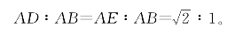
书的长宽比设计成这个样子有什么好处呢？
通常的书，是所谓32开本，也就是把一整张纸对开5次得到的尺寸。整张纸的长宽比要设计得合理，才能使对开、4开、8开、16开、32开得到的纸张形状大体相似。比如，整张纸如果是正方形，那么16开的书便成了方方的，而32开的书却是长长的。这样就不整齐，显得别扭。怎样使一张纸对开后的形状和原来的形状相似呢？设纸的长与宽分别是x和y，想要对开之后和原来的形状相似，要有
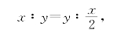
于是得
x2＝2y2，
即
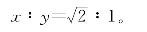
当然，通常整张纸的长宽比是1092∶787，或1156∶850，都略小于
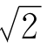
。这是因为还考虑到别的因素，比如装订好的书还要把边切齐等。除了保证各种开本形状相似之外，还要照顾到美观。又窄又长的矩形，或近似正方的矩形，多数人觉得不那么好看，尽管大家都说不出道理来。
什么形状的矩形最美呢？建筑学家很早就研究过这个问题。因为盖房子要开窗口，窗子多数是矩形的。经过调查研究，大家认为，如果一个矩形，把它切掉一个正方形后，剩下的小矩形和原来的相似，看起来才是最美的。
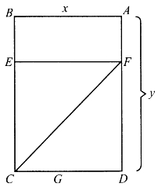
图5-2
怎样达到这个要求呢？如图5-2，设矩形长为y，宽为x。想要从ABCD中切掉一个正方形CDFE，使剩下来的ABEF相似于原来的矩形BCDA，必须
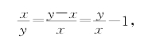
也就是
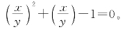
设
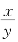
＝λ，解方程式λ2＋λ－1＝0，得到λ＝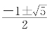
。取正根，即得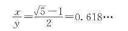
这个最“美”的矩形的宽与长之比、无理数
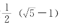
，就是有名的黄金数，简称金数。留心看看建筑物上的窗户，便会发现，大多数窗户像图5-2的那个矩形，而且也常常分成两块，下面差不多是方的。
黄金数，又叫做“中外比”。它的来历是这样的：在线段AB上取一个点C，C把AB分成大小两段AC、BC。如果能使全段比大段等于大段比小段，即
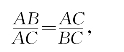
那么比值BC∶AC叫做中外比。这时，C点应当在何处呢？
设λ＝
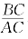
，由AB＝BC＋AC及上述要求得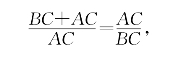
也就是λ＋1＝
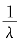
，即λ2＋λ－1＝0，又得到了λ＝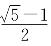
。如果AB是一根琴弦，在C点附近弹奏，琴声最为悦耳。一般说来，管弦乐器在中外比处，奏出的声音较为和谐。所以，人们把这种线段分割法叫黄金分割，或弦分割。
舞台的宽如果是AB，报幕员的位置在哪里最好呢？站在正中间显得太呆板，站在靠边的地方，又似乎失去了平衡；而站在AB的黄金分割点，多数人会觉得比较得体。
也许你在想，美观也罢，悦耳也罢，无非是人们的一种模模糊糊的感觉。你说长宽比为1∶
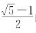
的窗子好看，我偏说正方形好看，或者说细长条好看。你能拿出什么真凭实据把我驳倒？这个我可拿不出。不过，黄金数的其他用途和性质，那是有真凭实据的。
首先值得一提的是优选法。
比如，要造一种化学药品，只知道反应温度在0℃到100℃之间的某个温度时，产品的质量最好。怎么才能找到这个最佳温度呢？
那就在0℃到100℃之间进行试验吧。做试验，要花钱，费时间。怎样安排试验，才能用最少的试验次数，来找到最佳的温度呢？
优选法可以帮我们解决这个问题。怎么解决呢？黄金数0.618…扮演了重要角色！
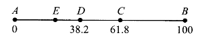
图5-3
如图5-3，用AB线段上的点代表0℃到100℃之间的温度。A表示0℃，B表示100℃。前两次试验，就取AB的两个中外比位置C、D所代表的温度来试验。由于
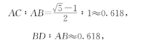
所以D、C分别表示38.2℃和61.8℃。
两次试验之后，比比看哪个温度效果好。如果D比C好，从C到B（61.8℃到100℃）这一段就淘汰，不用试了；C比D好，就淘汰AD段。当试验继续进行时，又按这个中外比位置在AC上选点。由于中外比的性质，AD∶AC≈0.618，故只要再取E点，使CE∶AC≈0.618就够了。把E点试验结果和刚才做过的D点比较，又可以淘汰掉AE或DC两段之一。
试一次，淘汰一段，只要做＋几次试验，便可以找到最佳温度。要是从0℃开始（或从100℃开始）一度一度地试，说不定要试近百次呢！
利用黄金数来设计试验，是1953年国外一篇文章中提出来的。我国著名数学家华罗庚教授，不但亲自到群众中去普及优选法，而且在优选法的进一步研究中，作出了重要贡献。华罗庚教授第一个指出，国外数学家虽然提出了利用黄金数设计试验，但没有证明黄金分割的最优性；已发表的所谓证明，在数学上都站不住脚。在他指出这一点之后不到一年，我国著名的计算机科学家洪加威教授，彻底地解决了这个问题，证明了黄金分割的最优性。
用黄金数来指导科学试验，已经使人赞叹了，更令人惊奇的是，某些植物的生长竟然也和黄金数有关！
在一枝茎上，生长着一层一层的绿叶。绿叶，是要进行光合作用，为植物制造营养的。怎样使上层的叶子，尽可能少遮蔽下层的叶子，从而使阳光得到充分利用呢？人们经过大量的观察和分析，发现了一个奥秘：原来，叶子的分布规律和黄金数有密切的关系。
设想，如果叶子像图5-4那样分布，相邻的两层叶子叶尖所指方向互相垂直。如果只有两层，上下可以错开，上面的叶子是挡不住阳光的。但如果层数多了，5，7，9层叶子就会挡住1，3层的阳光，6，8层的叶子会遮2，4层的阳光了，这就不好。
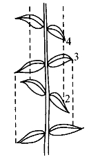
图5-4
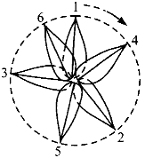
图5-5
叶子是怎么长的呢？图5-5是从上往下俯视的示意图。每层叶子只画一个来代表。第一层叶子和第二层之间，方向的角度差大致是137.5°，以后2到3，3到4，4到5，5到6，大致都是这个度数。这样就可以比较均匀地把多层叶子铺开了。
137.5°这个数有什么特点呢？我们知道，一圈是360°，
360°－137.5°＝222.5°，
而
137.5∶222.5≈0.618。
这里，又碰到了老朋友——黄金数！
在植物的主茎上，小枝的分布很多也是符合这个规律的。
黄金数
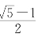
，曾被古代的数学家认为是几何学的两大瑰宝之一（另一个是勾股定理）。有人说，它是人类所知道的第一个无理数，比 还早。但由于欧几里得的《几何原本》中只记述了
还早。但由于欧几里得的《几何原本》中只记述了 不是有理数的证法，所以也有人认为这个说法还缺乏充分的根据。
不是有理数的证法，所以也有人认为这个说法还缺乏充分的根据。
认为黄金数比更早的人说，发现黄金数的人就是那个发现
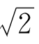
的人，即毕达哥拉斯的门徒希帕苏斯。希帕苏斯不但发现了正方形的边与对角线之比不是有理数，而且发现了正五边形的边与对角线之比也不是有理数。用初中平面几何里的知识，你能够算出：正五边形的边长与对角线之比，恰好又是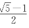
！证明正五边形的边与对角线之比不是有理数，其方法＋分巧妙。
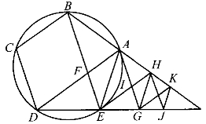
图5-6
如图5-6，用正五边形ABCDE的边AE来量它的对角线BE。由于易证
BF＝AB＝AE，
故量剩下的一段是FE。我们用FE回过头来量AE时不难发现，FE恰巧是小正五边形AFEGH的边，而AE成了对角线。情况和第一次一样，这就永远不可能正好量尽（图中BE∥AG∥HJ，AD∥HE∥KG）！这说明AE与BE之比不是有理数。
由于每次度量，都是量一下便剩个零头，按照上一章所说的道理，可知这个比值的连分数是
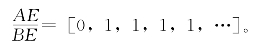
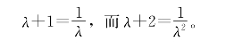
用λ＝
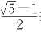
表示黄金数，你马上可以验证：λ，λ＋1，λ＋2这3个数，一个比一个大1，老大是老二的平方，老二又是老三的倒数，这种关系颇为有趣。相互之间有这种关系的3个数，在无穷无尽的实数中，只有这3个，而它们又有这么多的用处，所以有人把它们叫做“奇妙的无理数三兄弟”。
刚才都是在讲老三。其实，讲老三也等于讲老二；因为老二和老三互为倒数。最美的矩形，宽与长之比等于0.618…，这是老三；反过来，长与宽之比是1.618…，这不是老二吗？
下面介绍一个有趣的游戏。在这个游戏中，主要是老大和老二在起作用了。
这里有两堆小石子，可以两堆一样多，也可以一堆多些，另一堆少些。你和你的朋友按下列规则来做游戏：
（1）两人轮流把小石子拿到自己手里，每次至少拿一粒，不许不拿。
（2）可以从一堆里拿，一次拿几粒都行，把一堆拿光也可以。
（3）也可以同时从两堆里拿，但每次从两堆里拿的数目要一样多。
（4）拿到最后一粒石子的就是胜利者。
这游戏规则并不复杂。可是当石子数目稍多时，比如一堆是8粒，另一堆11粒，想要找到取胜的规律并不容易！如果你掌握了其中的奥妙，而你的朋友不知道，那么＋有八次你会得胜。
奥妙在哪里呢？请看下表：
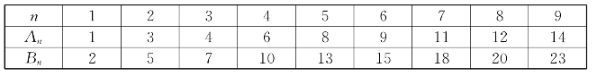
表上有一对一对的数字：（1，2），（3，5），（4，7），等等。如果你能把石子的数目拿成和表上某一对数相同，那么无论对方怎样拿，你都能得胜。
很明显，如果两堆石子中，一堆只有1粒，另一堆有2粒。轮到对方拿，那么他不管怎么拿，下一次你总可以一把抓尽，取得胜利。
如果两堆分别是3粒和5粒呢？
轮到对方拿。他不管怎么拿，你还是可以取胜。因为：如果他从3粒中取1粒，你就可以从5粒中取4粒；他从3粒中取2粒，你就可以从5粒中取3粒；他从5粒中取1粒，你就从两堆中各取2粒；他从5粒中取2粒，你干脆就一下拿光……总之，他拿过之后，你总可以拿光或把石子拿成（1，2）的情形！
总之，只要石子数目和表上某一对数符合了，不管他怎么拿，拿过之后，你总可以把石子拿得和表上另一对数又符合。这样越拿越少，最后就是（1，2），而且轮到他拿，你就稳操胜券了。
这表里的数有什么规律呢？原来，An恰巧是“老二”的n倍的整数部分，Bn是“老大”的n倍的整数部分。如果用[x]表示x的整数部分，即不大于x的最大整数，就是
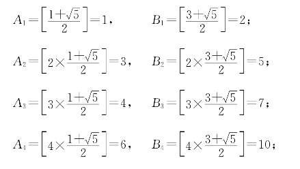
……
这么看，要造这个表还很费事，要作大量计算呢！
有一个简单方法，可以不用计算就把这个表很快造出来。只要记住两条：
第一，Bn－An＝n。有了An加上n便是Bn。
第二，所有的正整数都会在这个表上出现一次，且An＜An＋1。
有了这两条，造这个表就容易了。比如已经有了第一对数（1，2），下一步（A2，B2）是多少呢？因为所有的正整数都要出现，那必须取A2＝3；否则，“3”再也没有机会出现了。按第一条规定，就知道B2＝3＋2＝5。接下去，因为1，2，3都出现了，4还没有出现，故A3＝4，B3＝4＋3＝7。下一步轮到A4＝6（因为1，2，3，4，5都已知有过了），于是
B4＝6＋4＝10。
前面没写出A10和B10，但我们看到A9＝14，说明比14小的数已用完，15也已出现，只有取A10＝16，B10＝26。
这个游戏，不少刊物上介绍过它，但往往没有讲清楚这个取胜之表的造法，也没有证明这个表和老大2.618…及老二1.618…的关系。我们把这些关系的证明分成几个小习题，你如果有兴趣，可以通过自己的努力完成这几个题，也就明白其中的数学道理了。
作为这一章的结尾，再举一个应用黄金数的例子：我国著名数学家华罗庚教授和他的高足王元教授，对黄金数进行了深入的研究和巧妙的推广，设计出强有力的计算多重定积分的新方法。他们的这一研究成果在世界上处于领先地位，获得国际数学界的高度评价。人类对黄金数的认识，又揭开了新的辉煌的一页。
练习题五
1.数列1，1，2，3，5，8，13，21，34，55，…叫做斐波纳奇数列。它的规律是每一项是前两项之和。求证：相邻两项之比越来越接近
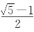
。更具体地说，记p0＝1，p1＝1，p2＝2，p3＝3，…，pn＋1＝pn＋pn－1，…则有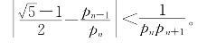
2.正五边形ABCDE中，对角线AD、BE交于F。求证：BE∶BF＝BF∶FE，因而BF∶FE＝
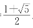
。3.21个外表相同的小球排成一行，中间有一个球最重。从它向前，一个比一个轻，从它向后也是一个比一个轻。要用天平称6次，把最重的这个球找出来，怎样称？
4.设λ＝
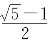
，求证：（1）
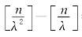
＝n。（[x]表示x的整数部分。）（2）对任意正整数n，m，
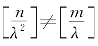
。5.若α是正的无理数，满足条件[kα]＜n的正整数k有多少个？
6.利用4、5两题说明：当n＝1，2，3，…时，
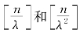
可以既不重复又不遗漏地走遍全体正整数。7.能利用以上3题把拿石子游戏的取胜原理说清吗？